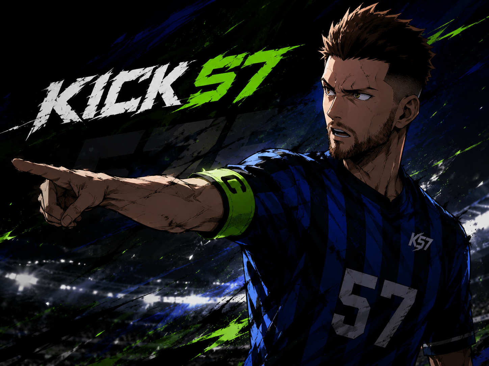

Código que resuelve problemas reales.
Córdoba, Argentina
31.4135° S, 64.1811° W
Construyo
productos,
produzco
música.
Programador, ingeniero de producto y productor musical. Este archivo reúne sistemas, sonidos y todo lo que estoy construyendo.
Sistemas escalables centrados en personas.
Sonido que conecta y transforma.
Enfocado
Construyendo el futuro, hoy.
Archivo sonoro / 01
Mi música
Cada canción es un universo.
Produzco, compongo y doy vida a historias sonoras que conectan emoción, tecnología y narrativa.
Trabajo / 02
Productos que construí.
De la necesidad al sistema: estrategia, diseño, código y evolución.

Comercio digital · Producto full-stack
iPhone Store
Río Ceballos
Catálogo comercial con disponibilidad, filtros, cotización y consultas conectadas a la operación diaria.
Identidad digital · Experiencia comercial
Orange Pepper
Una experiencia para explicar una propuesta compleja sin perder precisión, movimiento ni carácter.
Aplicación audiovisual
VicioTV
Aplicación con perfiles, descubrimiento, favoritos, persistencia y reproducción integrada.
Televisión en vivo · Experiencia global
VicioTV CONTINUUM
Exploración de canales de televisión en vivo de todo el mundo, sin suscripción y sin necesidad de iniciar sesión.
Ingeniería de producto digital
Creador100K
Mi enfoque para transformar problemas complejos de negocio en software claro, confiable y mantenible.
En construcción / 03
Lo próximo ya empezó.
Proyectos de largo alcance que todavía están creciendo, con su arquitectura, alcance y estado real.

Plataforma deportiva · Producto en desarrollo
KICK57
Un sistema integral para administrar la vida de un club de fútbol 5 y 7, desde la reserva hasta el partido, el pago y la comunidad.
Visión del producto
Una operación.
Cuatro superficies.
La experiencia reúne una app móvil para jugadores, una web complementaria, un panel de administración de escritorio y una API central. Todas comparten las mismas reglas de negocio y una única base de datos.
Partidos y canchas
Reservas por hora, formatos F5 y F7, cupos, equipos, profesores, torneos y control de solapamientos.
Pagos y operación
Señas, pagos totales, Mercado Pago, cancelaciones, reembolsos con trazabilidad, caja y arqueo.
Cantina
Productos, stock, pedidos en tiempo real, promociones y reglas comerciales configurables.
Comunidad
Perfiles, actividad, chats, invitaciones, historial de partidos y sistema de valoración.
Estado actual
Fundaciones e identidad.
El monorepo, la arquitectura de aplicaciones, las reglas centrales del dominio y la primera fase de identidad ya están definidos e implementados.
- 01Arquitectura y dominio
- 02Identidad y roles
- 03Canchas y calendario
- 04Partidos y reservas
- 05Pagos, cantina y comunidad
Archivo / 04
Imágenes
Portadas, sesiones, procesos y fragmentos visuales del archivo.
Archivo / 05
Videos
Visualizers, videoclips y registros en movimiento.